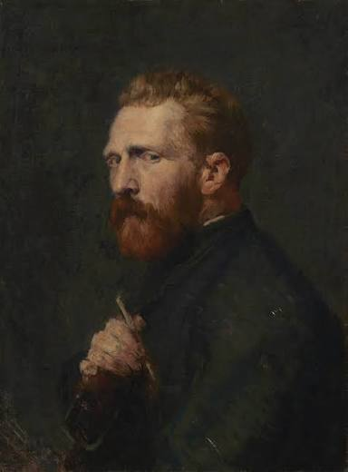
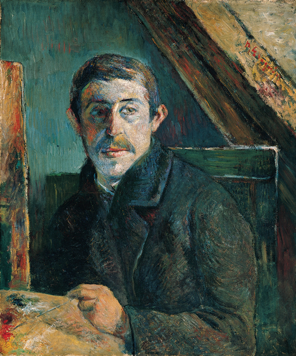
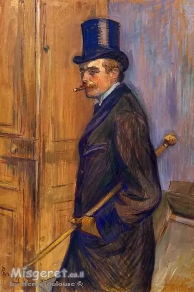

וינסנט ואן גוך

וינסנט ואן גוך היה צייר הולנדי מהמאה ה־19, ונחשב לאחד האמנים המשפיעים ביותר בתולדות האמנות. הוא ידוע בזכות השימוש בצבעים חזקים, משיכות מכחול בולטות ויצירות כמו "ליל כוכבים" ו"חמניות".
לצפיה ביצירות
וינסנט ואן גוך היה צייר הולנדי מהמאה ה־19, ונחשב לאחד האמנים המשפיעים ביותר בתולדות האמנות. הוא ידוע בזכות השימוש בצבעים חזקים, משיכות מכחול בולטות ויצירות כמו "ליל כוכבים" ו"חמניות".
לצפיה ביצירות
פול גוגן היה צייר צרפתי שפעל בסוף המאה ה־19. הוא נודע בזכות צבעים עזים, סגנון ייחודי וציורים בהשראת המקומות שבהם חי וביקר, במיוחד טהיטי.
לצפיה ביצירות
אנרי דה טולוז-לוטרק היה צייר, מאייר ואמן כרזות צרפתי. הוא התפרסם בעיקר בזכות תיאורים של חיי הלילה בפריז, מופעי קברט ודמויות מהבוהמה של סוף המאה ה־19.
לצפיה ביצירות